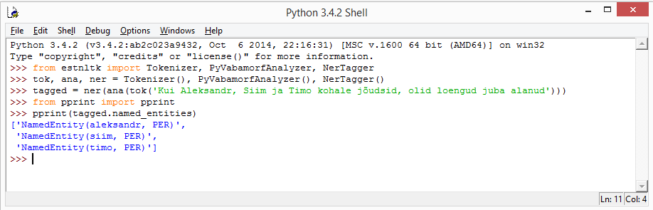

Installation¶
Depending on what platform you intend to use the library, you have several choices how to install the library.
Building from source¶
The most generic use case is to build the library from source and manually install all the necessary dependencies. This is mainly intended to be used on Linux systems with a custom setup or when building from source on Windows. To do that, you will need to install the following dependencies.
Dependencies¶
Python with development headers. https://www.python.org/ .
The most obvious dependency of course is Python itself.
Estnltk currently supports versions 2.7 and 3.4.
Other versions may work as well, but are not tested.
Python installer for Windows includes the development headers that are saved to the Python folder.
In Linux, depending on the flavor and distribution, you usually have to install the headers separately.
Either by building the Python from source or using a package manager. The package is typically named
python-dev for Python 2 and python3-dev for Python3.
SWIG wrapper generator, http://swig.org/ .
SWIG is a software development tool that connects programs written in C and C++ with a variety of high-level programming languages.
SWIG is used with different types of target languages including common scripting languages such as Javascript, Perl, PHP, Python, Tcl and Ruby.
Estnltk contains C++ code that uses SWIG to extend Python.
In Linux, this package is usually named swig and can be installed with a package manager.
C++ compiler.
In Linux systems, Estnltk can be built using GNU C++ compiler which can be installed with a package manager.
Typically the package is named g++.
It is also possible to manually download the compiler from https://gcc.gnu.org/ .
In Windows, we recommend using Visual Studio 2008 for Python2.7 and Visual Studio 2010 for Python3.4. Note that for 64-bit versions you need to have also 64-bit toolchains, which are not included in Express versions of the Visual Studio. We recommend downloading the full Visual Studio SDK and performing the building process through the Visual studio command prompt interface.
Java VM.
Several Estnltk components are written in Java and interfaced with Python.
Therefore, you also need latest Java Runtime installed on your system.
The java virtual machine must be in the system PATH.
We recommend using Oracle Java http://www.oracle.com/technetwork/java/javase/downloads/index.html,
although alternatives such as OpenJDK (http://openjdk.java.net/) should also work.
setuptools. https://pypi.python.org/pypi/setuptools .
A popular toolchain to build Python packages. In Linux package managers, typically called python-setuptools .
Here are all the additional dependencies of estnltk, which are required to get all the functionality working.
Note that most or all of them should be installed automatically by setuptools build system, but non-pure Python
packages may require additional dependencies to be installed.
We cannot list them all for all possible platforms, but see next sections on example installs on Ubuntu 14.04 and Windows 8.
- nltk>=3.0.0
- python-crfsuite>=0.8.1
- jsonpath-rw>=1.3.0
- six>=1.7.3
- tempdir>=0.6
- xmltodict>=0.9.0
- beautifulsoup4>=4.3.2
- pandas>=0.14.1
- scikit-learn>=0.15.1
- xlrd>=0.9.2
- xlsxwriter>=0.5.7
- numpy>=1.8.2
- scipy>=0.11.0
- pytz>=2014.4
- python-dateutil>=2.2
- nose>=1.3.3
- pyparsing>=2.0.2
- matplotlib>=1.2.1
- xlwt-future>=0.7.5
Building using setuptools¶
First thing after installing the dependencies is to get the source. One option is cloing the repository using latest code:
git clone https://github.com/tpetmanson/estnltk estnltk
or from mirror repository:
git clone https://estnltk.cs.ut.ee/timo/estnltk.git estnltk
or download it as a compressed zip:
https://estnltk.cs.ut.ee/timo/estnltk/repository/archive.zip
Then, extract the sources and issue following commands in the downloaded/cloned folder to build and install:
python setup.py build
sudo python setup.py install
Note that python usually refers to default Python version installed with the system.
Usually, you can also use more specific versions by replacing python with python2.7 or python3.4.
Note that the same commands work when building in Windows, but you need to execute them in Visual Studio SDK command prompt.
Building using pip¶
Another option is to use pip program to automatically download and install the library without manually cloning the repository:
sudo pip install estnltk
Running unit tests¶
It is reasonable to run unit tests to see, whether everything is working correctly and library functions properly:
python -m unittest discover estnltk
After the tests run for a while, you should see something similar in the end:
----------------------------------------------------------------------
Ran 144 tests in 37.809s
OK
Step-by-step Ubuntu Linux 14.04¶
This section describes step-by-step instructions to install Estnltk with Python3.4 on Ubuntu Linux 14.04 . These steps should be also helpful to install Linux on other distributions, although they probably need minor modifications. However, we expect the users of other flavours capable of figuring out the necessary steps to set up their systems.
Install main dependencies:
sudo apt-get install g++ swig python3-setuptools libfreetype6-dev python3-pip liblapack-dev libblas-dev python3-dev gfortran default-jre
sudo pip3 install numpy
Build and install estnltk:
git clone https://github.com/tpetmanson/estnltk estnltk
cd estnltk
python3 setup.py build
sudo python3 setup.py install
Post-installation steps:
python3 -m nltk.downloader punkt
Run tests:
cd ..
python3 -m unittest discover estnltk
Type some example code:
$ python3
Python 3.4.0 (default, Apr 11 2014, 13:05:11)
[GCC 4.8.2] on linux
Type "help", "copyright", "credits" or "license" for more information.
>>> import estnltk
>>> from pprint import pprint
>>> pprint(estnltk.analyze('Tere maailm'))
[{'analysis': [{'clitic': '',
'ending': '0',
'form': '',
'lemma': 'tere',
'partofspeech': 'I',
'root': 'tere',
'root_tokens': ['tere']},
{'clitic': '',
'ending': '0',
'form': 'sg g',
'lemma': 'tere',
'partofspeech': 'S',
'root': 'tere',
'root_tokens': ['tere']},
{'clitic': '',
'ending': '0',
'form': 'sg n',
'lemma': 'tere',
'partofspeech': 'S',
'root': 'tere',
'root_tokens': ['tere']}],
'text': 'Tere'},
{'analysis': [{'clitic': '',
'ending': '0',
'form': 'sg n',
'lemma': 'maailm',
'partofspeech': 'S',
'root': 'maa_ilm',
'root_tokens': ['maa', 'ilm']}],
'text': 'maailm'}]
Done!
Step-by-step Windows 8¶
Although we have installers for Windows, it takes little bit more twiddling to get the library work. First, decide whether you need 32 or 64 bit package and also decide whether you use Python2.7 or Python3.4 . We recommend using 64-bit Python3.4 . Next, we use an extremely useful list of binary installers for various Python packages by Christoph Gohlke http://www.lfd.uci.edu/~gohlke/pythonlibs/ :
- NLTK http://www.lfd.uci.edu/~gohlke/pythonlibs/#nltk
- six http://www.lfd.uci.edu/~gohlke/pythonlibs/#six
- pandas http://www.lfd.uci.edu/~gohlke/pythonlibs/#pandas
- scikit-learn http://www.lfd.uci.edu/~gohlke/pythonlibs/#scikit-learn
- numpy http://www.lfd.uci.edu/~gohlke/pythonlibs/#numpy
- scipy http://www.lfd.uci.edu/~gohlke/pythonlibs/#scipy
- pytz http://www.lfd.uci.edu/~gohlke/pythonlibs/#pytz
- python-dateutil http://www.lfd.uci.edu/~gohlke/pythonlibs/#python-dateutil
- nose http://www.lfd.uci.edu/~gohlke/pythonlibs/#nose
- pyparsing http://www.lfd.uci.edu/~gohlke/pythonlibs/#pyparsing
- matplotlib http://www.lfd.uci.edu/~gohlke/pythonlibs/#matplotlib
- python-crfsuite https://github.com/tpetmanson/estnltk/tree/master/dist/python-crfsuite
Now, Christoph Gohlke’s website does not list all required Python packages.
Note that the python-crfsuite Windows installers are given in esnltk\dist\python-crfsuite directory.
The reason was that we had to create these ourselves as we did not find any public website that offers to download them.
However, we do not want to manage installers for the rest of missing dependencies.
Therefore, we install missing packages using the pip tool.
This tool comes with default installation of Python3.4 (install it separately for Python2.7) and can be used to install the dependencies with following command in command prompt:
python -m pip install jsonpath-rw tempdir xmltodict beautifulsoup4 xlwt-future xlrd xlsxwriter
This installs the following dependencies:
- jsonpath-rw
- tempdir
- xmltodict
- beautifulsoup4
- xlwt-future
- xlrd
- xlsxwriter
Then, install Java from http://www.oracle.com/technetwork/java/javase/downloads/index.html .
Then, download and execute the suitable estnltk installer:
32-bit:
- https://github.com/tpetmanson/estnltk/blob/master/dist/estnltk-1.1.win32-py2.7.msi
- https://github.com/tpetmanson/estnltk/blob/master/dist/estnltk-1.1.win32-py3.4.msi
64-bit:
- https://github.com/tpetmanson/estnltk/blob/master/dist/estnltk-1.1.win-amd64-py2.7.msi
- https://github.com/tpetmanson/estnltk/blob/master/dist/estnltk-1.1.win-amd64-py3.4.msi
Then, install NLTK tokenizers from command promp:
python -m nltk.downloader punkt
Finally, we are done :) !
Post-installation steps¶
Downloading NLTK tokenizers for Estonian. These are necessary for tokenization:
python -m nltk.downloader punkt
Estnltk comes with pre-built named entity taggers, but you can optionally rebuild them if you have lost them for some reason. The command to build the default named entity tagger for Estonian:
python -m estnltk.ner train_default_model